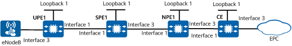

Example for Configuring HoVPN on an IP RAN
Networking Requirements
HVPN technology enables an IP RAN to provide fixed-mobile convergence (FMC) and hierarchize the network between CSGs and RSGs. An IP RAN using HVPN technology is easy to expand and flexible to deploy. HVPN has two networking modes: HoVPN and H-VPN. The following example uses HoVPN, in which UPEs only need to store specific routes to base stations and default routes to SPEs. HoVPN lowers the routing and forwarding requirements for UPEs.
On the network shown in Figure 1, the base station connects to the UPE over a VPN. HoVPN is deployed for the base station and base station controller (EPC side) to communicate.

In this example, interface 1 and interface 3 represent 10GE 0/0/1 and 10GE 0/0/3, respectively.

Device |
Interface |
IP Address |
|---|---|---|
UPE1 |
Loopback 1 |
1.1.1.1/32 |
10GE0/0/1 |
172.16.3.1/24 |
|
10GE0/0/3 |
10.1.1.2/24 |
|
SPE1 |
Loopback 1 |
3.3.3.3/32 |
10GE0/0/1 |
172.16.3.2/24 |
|
10GE0/0/3 |
172.18.5.1/24 |
|
NPE1 |
Loopback 1 |
5.5.5.5/32 |
10GE0/0/1 |
172.18.5.2/24 |
|
10GE0/0/3 |
10.4.1.1/24 |
|
CE |
Loopback 1 |
7.7.7.7/32 |
10GE0/0/1 |
10.4.1.2/24 |
|
10GE0/0/3 |
10.3.1.1/24 |
Configuration Roadmap
The configuration roadmap is as follows:
Configure IGP for the UPE, SPE, and NPE to communicate and learn each other's loopback address.
Establish an MPLS LSP between the UPE and SPE and between the SPE and NPE.
Configure a VPN instance on the UPE and NPE, establish an EBGP peer relationship between the NPE and CE, and import local direct routes to the UPE and NPE.
Establish an MP-IBGP peer relationship between the UPE and SPE and between the SPE and NPE.
Create a VPN instance on the SPE and specify the UPE connected to the SPE as the understratum PE of the SPE.
Configure static default routes.
- Configure route-policies to control route import and export.
Procedure
- Configure OSPF for the UPE, SPE, and NPE to communicate.
After OSPF is configured, an OSPF neighbor relationship can be established between the UPE and SPE and between the SPE and NPE. Run the display ospf peer command. The command output shows that the neighbor status is Full. Run the display ip routing-table command. The command output shows that the UPE, SPE, and NPE have learned the routes to each other's loopback interfaces.
For detailed configurations, see Configuration Scripts.
- Configure basic MPLS capabilities and MPLS LDP to establish LDP LSPs on the MPLS backbone network.
After the configuration is complete, an LDP session can be established between the UPE and SPE and between the SPE and NPE. Run the display mpls ldp session command. The command output shows that the session status is Operational. Then, run the display mpls ldp lsp command. The command output shows that LDP LSPs have been established.
For detailed configurations, see Configuration Scripts.
- Configure a VPN instance on the UPE and NPE, establish an EBGP peer relationship between the NPE and CE, and import local direct routes to the UPE and NPE.
# Configure UPE1.
[UPE1] ip vpn-instance vpna [UPE1-vpn-instance-vpna] ipv4-family [UPE1-vpn-instance-vpna-af-ipv4] route-distinguisher 100:1 [UPE1-vpn-instance-vpna-af-ipv4] vpn-target 1:1 both [UPE1-vpn-instance-vpna-af-ipv4] quit [UPE1-vpn-instance-vpna] quit [UPE1] interface 10GE0/0/3 [UPE1-10GE0/0/3] ip binding vpn-instance vpna [UPE1-10GE0/0/3] ip address 10.1.1.2 24 [UPE1-10GE0/0/3] quit [UPE1] bgp 100 [UPE1-bgp] ipv4-family vpn-instance vpna [UPE1-bgp-vpna] peer 10.1.1.1 as-number 65410 [UPE1-bgp-vpna] import-route direct [UPE1-bgp-vpna] quit [UPE1-bgp] quit
# Configure NPE1.
[NPE1] ip vpn-instance vpna [NPE1-vpn-instance-vpna] ipv4-family [NPE1-vpn-instance-vpna-af-ipv4] route-distinguisher 100:1 [NPE1-vpn-instance-vpna-af-ipv4] vpn-target 1:1 both [NPE1-vpn-instance-vpna-af-ipv4] quit [NPE1-vpn-instance-vpna] quit [NPE1] interface 10GE0/0/3 [NPE1-10GE0/0/3] ip binding vpn-instance vpna [NPE1-10GE0/0/3] ip address 10.4.1.1 24 [NPE1-10GE0/0/3] quit [NPE1] bgp 100 [NPE1-bgp] ipv4-family vpn-instance vpna [NPE1-bgp-vpna] peer 10.4.1.2 as-number 65420 [NPE1-bgp-vpna] import-route direct [NPE1-bgp-vpna] quit [NPE1-bgp] quit
# Configure the CE.
<HUAWEI> system-view [HUAWEI] sysname CE [CE] interface 10ge 0/0/1 [CE-10GE0/0/1] ip address 10.4.1.2 24 [CE-10GE0/0/1] quit [CE] interface 10GE0/0/3 [CE-10GE0/0/3] ip address 10.3.1.1 24 [CE-10GE0/0/3] quit [CE] interface loopback 1 [CE-Loopback1] ip address 7.7.7.7 32 [CE-Loopback1] quit [CE] bgp 65420 [CE-bgp] peer 10.4.1.1 as-number 100 [CE-bgp] import-route direct [CE-bgp] quit
After completing the configuration, run the display ip vpn-instance verbose command on UPE1 or the NPE. The command output shows VPN instance configuration.
- Establish an MP-IBGP peer relationship between the UPE and SPE and between the SPE and NPE.
# Configure UPE1.
[UPE1] bgp 100 [UPE1-bgp] router-id 1.1.1.1 [UPE1-bgp] peer 3.3.3.3 as-number 100 [UPE1-bgp] peer 3.3.3.3 connect-interface loopback 1 [UPE1-bgp] ipv4-family vpnv4 [UPE1-bgp-af-vpnv4] peer 3.3.3.3 enable [UPE1-bgp-af-vpnv4] quit [UPE1-bgp] quit
# Configure SPE1.
[SPE1] bgp 100 [SPE1-bgp] router-id 3.3.3.3 [SPE1-bgp] peer 1.1.1.1 as-number 100 [SPE1-bgp] peer 1.1.1.1 connect-interface loopback 1 [SPE1-bgp] peer 5.5.5.5 as-number 100 [SPE1-bgp] peer 5.5.5.5 connect-interface loopback 1 [SPE1-bgp] ipv4-family vpnv4 [SPE1-bgp-af-vpnv4] peer 1.1.1.1 enable [SPE1-bgp-af-vpnv4] peer 5.5.5.5 enable [SPE1-bgp-af-vpnv4] quit [SPE1-bgp] quit
# Configure NPE1.
[NPE1] bgp 100 [NPE1-bgp] peer 3.3.3.3 as-number 100 [NPE1-bgp] peer 3.3.3.3 connect-interface loopback 1 [NPE1-bgp] ipv4-family vpnv4 [NPE1-bgp-af-vpnv4] peer 3.3.3.3 enable [NPE1-bgp-af-vpnv4] quit [NPE1-bgp] quit
- Configure a VPN instance on the SPE and specify the UPE as the understratum PE of the SPE.
# Configure a VPN instance.
[SPE1] ip vpn-instance vpna [SPE1-vpn-instance-vpna] ipv4-family [SPE1-vpn-instance-vpna-af-ipv4] route-distinguisher 100:1 [SPE1-vpn-instance-vpna-af-ipv4] vpn-target 1:1 both [SPE1-vpn-instance-vpna-af-ipv4] quit [SPE1-vpn-instance-vpna] quit
# Specify the corresponding UPE as an understratum PE.
[SPE1] bgp 100 [SPE1-bgp] ipv4-family vpnv4 [SPE1-bgp-af-vpnv4] peer 1.1.1.1 upe [SPE1-bgp-af-vpnv4] quit [SPE1-bgp] quit
- Configure a static default route and use a route-policy to ensure that an SPE advertises only this route to UPEs.# Configure SPE1.
[SPE1] ip route-static vpn-instance vpna 0.0.0.0 0.0.0.0 55.55.55.55 [SPE1] route-policy default permit node 10 [SPE1-route-policy] apply local-preference 200 [SPE1-route-policy] quit [SPE1] bgp 100 [SPE1-bgp] ipv4-family vpn-instance vpna [SPE1-bgp-vpna] network 0.0.0.0 route-policy default [SPE1-bgp-vpna] quit [SPE1-bgp] quit
# Configure NPE1.
[NPE1] interface loopback 2 [NPE1-LoopBack2] ip binding vpn-instance vpna [NPE1-LoopBack2] ip address 55.55.55.55 32 [NPE1-LoopBack2] quit
- Configure route-policies to control route import and export.# Configure SPE1.
[SPE1] ip ip-prefix default permit 0.0.0.0 0 [SPE1] route-policy NPE1 deny node 10 [SPE1-route-policy] if-match ip-prefix default [SPE1-route-policy] quit [SPE1] route-policy NPE1 permit node 20 [SPE1-route-policy] apply local-preference 200 [SPE1-route-policy] quit [SPE1] bgp 100 [SPE1-bgp] ipv4-family vpnv4 [SPE1-bgp-af-vpnv4] peer 5.5.5.5 route-policy NPE1 import [SPE1-bgp-af-vpnv4] peer 1.1.1.1 ip-prefix default export [SPE1-bgp-af-vpnv4] quit [SPE1-bgp] quit
# Configure NPE1.
[NPE1] route-policy SPE1 permit node 10 [NPE1-route-policy] apply local-preference 200 [NPE1-route-policy] quit [NPE1] bgp 100 [NPE1-bgp] ipv4-family vpnv4 [NPE1-bgp-af-vpnv4] peer 3.3.3.3 route-policy SPE1 import [NPE1-bgp-af-vpnv4] quit [NPE1-bgp] quit
Verifying the Configuration
After the configuration is complete, UPE1 does not have any route to the EPC side, but has a default route with SPE1 as the next hop. NPE1 has a BGP route to the eNodeB. The CE and UPE1 can ping each other.
<UPE1> display ip routing-table vpn-instance vpna Proto: Protocol Pre: Preference Route Flags: R - relay, D - download to fib, T - to vpn-instance, B - black hole route ------------------------------------------------------------------------------ Routing Table : vpna Destinations : 5 Routes : 5 Destination/Mask Proto Pre Cost Flags NextHop Interface 0.0.0.0/0 IBGP 255 0 RD 3.3.3.3 10GE0/0/1 127.0.0.0/8 Direct 0 0 D 127.0.0.1 InLoopBack0 10.1.1.0/24 Direct 0 0 D 10.1.1.2 10GE0/0/3 10.1.1.2/32 Direct 0 0 D 127.0.0.1 10GE0/0/3 10.1.1.255/32 Direct 0 0 D 127.0.0.1 10GE0/0/3 255.255.255.255/32 Direct 0 0 D 127.0.0.1 InLoopBack0
<UPE1> ping -vpn-instance vpna 10.3.1.1
PING 10.3.1.1: 56 data bytes, press CTRL_C to break
Reply from 10.3.1.1: bytes=56 Sequence=1 ttl=251 time=5 ms
Reply from 10.3.1.1: bytes=56 Sequence=2 ttl=253 time=3 ms
Reply from 10.3.1.1: bytes=56 Sequence=3 ttl=251 time=3 ms
Reply from 10.3.1.1: bytes=56 Sequence=4 ttl=253 time=2 ms
Reply from 10.3.1.1: bytes=56 Sequence=5 ttl=251 time=2 ms
--- 10.3.1.1 ping statistics ---
5 packet(s) transmitted
5 packet(s) received
0.00% packet loss
round-trip min/avg/max = 2/3/5 ms
<NPE1> display ip routing-table vpn-instance vpna Proto: Protocol Pre: Preference Route Flags: R - relay, D - download to fib, T - to vpn-instance, B - black hole route ------------------------------------------------------------------------------ Routing Table : vpna Destinations : 9 Routes : 9 Destination/Mask Proto Pre Cost Flags NextHop Interface 0.0.0.0/0 IBGP 255 0 RD 3.3.3.3 10GE0/0/1 10.1.1.0/24 IBGP 255 0 RD 3.3.3.3 10GE0/0/1 10.4.1.0/24 Direct 0 0 D 10.4.1.1 10GE0/0/3 10.4.1.1/32 Direct 0 0 D 127.0.0.1 10GE0/0/3 10.4.1.255/32 Direct 0 0 D 127.0.0.1 10GE0/0/3 10.3.1.0/24 EBGP 255 0 RD 10.4.1.2 10GE0/0/3 7.7.7.7/32 EBGP 255 0 RD 10.4.1.2 10GE0/0/3 255.255.255.255/32 Direct 0 0 D 127.0.0.1 InLoopBack0
Run the display bgp vpnv4 all routing-table command on UPE1. The command output shows information about a default route in VPN instance vpna. The next hop of the default route is SPE1.
<UPE1> display bgp vpnv4 all routing-table BGP Local router ID is 1.1.1.1 Status codes: * - valid, > - best, d - damped, x - best external, a - add path, h - history, i - internal, s - suppressed, S - Stale Origin : i - IGP, e - EGP, ? - incomplete Total number of routes from all PE: 4 Route Distinguisher: 100:1 Network NextHop MED LocPrf PrefVal Path/Ogn *>i 0.0.0.0 3.3.3.3 0 200 0 i *> 10.1.1.0/24 0.0.0.0 0 0 ? *> 10.1.1.2/32 0.0.0.0 0 0 ? VPN-Instance vpna, router ID 1.1.1.1: Total Number of Routes: 4 Network NextHop MED LocPrf PrefVal Path/Ogn *>i 0.0.0.0 3.3.3.3 0 200 0 i *> 10.1.1.0/24 0.0.0.0 0 0 ? *> 10.1.1.2/32 0.0.0.0 0 0 ?
Run the display ip routing-table vpn-instance vpna 10.3.1.1 verbose command on UPE1. The command output shows information about the backup label and backup tunnel ID of the route to the EPC side.
<UPE1> display ip routing-table vpn-instance vpna 10.3.1.1 verbose Proto: Protocol Pre: Preference Route Flags: R - relay, D - download to fib, T - to vpn-instance, B - black hole route ------------------------------------------------------------------------------ Routing Table : vpna Summary Count : 1 Destination: 0.0.0.0/0 Protocol: IBGP Process ID: 0 Preference: 255 Cost: 0 NextHop: 3.3.3.3 Neighbour: 0.0.0.0 State: Active Adv Relied Age: 00h15m22s Tag: 0 Priority: low Label: 16 QoSInfo: 0x0 IndirectID: 0x5200006A RelayNextHop: 3.3.3.3 Interface: 10GE0/0/1 TunnelID: 0x0000000001004c4b44 Flags: RD
Configuration Scripts
UPE1
# sysname UPE1 # ip vpn-instance vpna ipv4-family route-distinguisher 100:1 vpn-target 1:1 import-extcommunity vpn-target 1:1 export-extcommunity # mpls lsr-id 1.1.1.1 # mpls # mpls ldp # interface 10GE0/0/1 ip address 172.16.3.1 255.255.255.0 mpls mpls ldp # interface 10GE0/0/3 ip binding vpn-instance vpna ip address 10.1.1.2 255.255.255.0 # interface LoopBack1 ip address 1.1.1.1 255.255.255.255 # bgp 100 router-id 1.1.1.1 peer 3.3.3.3 as-number 100 peer 3.3.3.3 connect-interface LoopBack1 # ipv4-family unicast peer 3.3.3.3 enable # ipv4-family vpnv4 policy vpn-target peer 3.3.3.3 enable # ipv4-family vpn-instance vpna import-route direct peer 10.1.1.1 as-number 65410 # ospf 1 area 0.0.0.0 network 1.1.1.1 0.0.0.0 network 172.16.3.0 0.0.0.255 # return
SPE1
# sysname SPE1 # ip vpn-instance vpna ipv4-family route-distinguisher 100:1 vpn-target 1:1 import-extcommunity vpn-target 1:1 export-extcommunity # mpls lsr-id 3.3.3.3 # mpls # mpls ldp # interface 10GE0/0/1 ip address 172.16.3.2 255.255.255.0 mpls mpls ldp # interface 10GE0/0/3 ip address 172.18.5.1 255.255.255.0 mpls mpls ldp # interface LoopBack1 ip address 3.3.3.3 255.255.255.255 # bgp 100 router-id 3.3.3.3 peer 1.1.1.1 as-number 100 peer 1.1.1.1 connect-interface LoopBack1 peer 5.5.5.5 as-number 100 peer 5.5.5.5 connect-interface LoopBack1 # ipv4-family unicast peer 1.1.1.1 enable peer 5.5.5.5 enable # ipv4-family vpnv4 policy vpn-target peer 1.1.1.1 enable peer 1.1.1.1 ip-prefix default export peer 1.1.1.1 upe peer 5.5.5.5 enable peer 5.5.5.5 route-policy NPE1 import # ipv4-family vpn-instance vpna network 0.0.0.0 route-policy default # ospf 1 area 0.0.0.0 network 3.3.3.3 0.0.0.0 network 172.16.3.0 0.0.0.255 network 172.18.5.0 0.0.0.255 # ip ip-prefix default index 10 permit 0.0.0.0 0 # route-policy NPE1 deny node 10 if-match ip-prefix default # route-policy NPE1 permit node 20 apply local-preference 200 # route-policy default permit node 10 apply local-preference 200 # ip route-static vpn-instance vpna 0.0.0.0 0.0.0.0 55.55.55.55 # return
NPE1
# sysname NPE1 # ip vpn-instance vpna ipv4-family route-distinguisher 100:1 vpn-target 1:1 import-extcommunity vpn-target 1:1 export-extcommunity # mpls lsr-id 5.5.5.5 # mpls # mpls ldp # interface 10GE0/0/1 ip address 172.18.5.2 255.255.255.0 mpls mpls ldp # interface 10GE0/0/3 ip binding vpn-instance vpna ip address 10.4.1.1 255.255.255.0 # interface LoopBack1 ip address 5.5.5.5 255.255.255.255 # interface LoopBack2 ip binding vpn-instance vpna ip address 55.55.55.55 255.255.255.255 # bgp 100 router-id 5.5.5.5 peer 3.3.3.3 as-number 100 peer 3.3.3.3 connect-interface LoopBack1 # ipv4-family unicast peer 3.3.3.3 enable # ipv4-family vpnv4 policy vpn-target peer 3.3.3.3 enable peer 3.3.3.3 route-policy SPE1 import # ipv4-family vpn-instance vpna import-route direct peer 10.4.1.2 as-number 65420 # ospf 1 area 0.0.0.0 network 5.5.5.5 0.0.0.0 network 172.18.5.0 0.0.0.255 # route-policy SPE1 permit node 10 apply local-preference 200 # return
CE
# sysname CE # interface 10GE0/0/1 ip address 10.4.1.2 255.255.255.0 # interface 10GE0/0/3 ip address 10.3.1.1 255.255.255.0 # interface LoopBack1 ip address 7.7.7.7 255.255.255.255 # bgp 65420 peer 10.4.1.1 as-number 100 # ipv4-family unicast import-route direct peer 10.4.1.1 enable # return